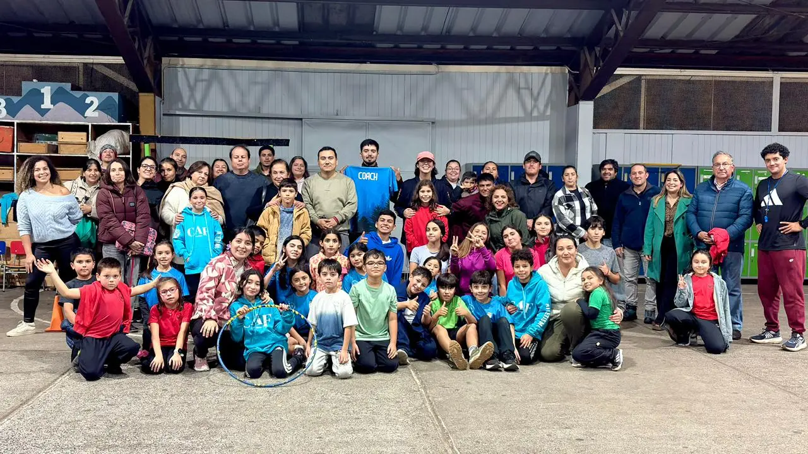
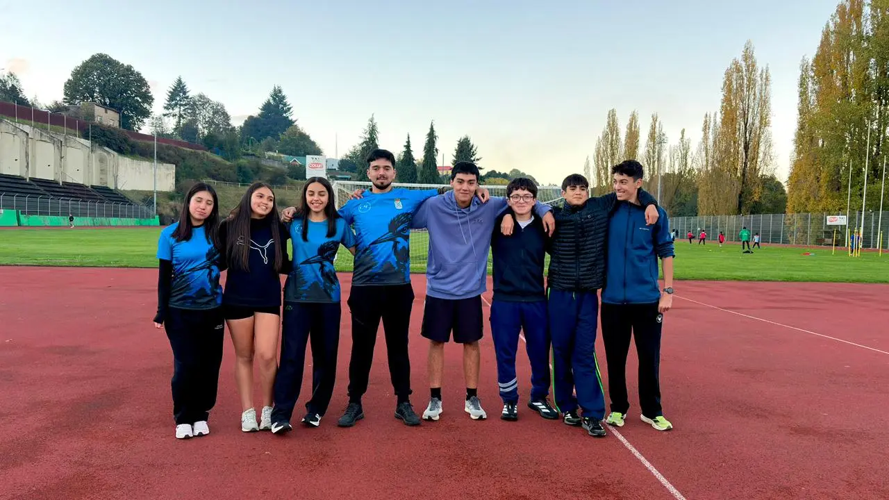

CAF La Unión fortalece su equipo técnico con la llegada del profesor Jhon Bórquez
16 de Abril, 2026En un día histórico para el crecimiento institucional de nuestra organización, el Club Atlético CAF de La Unión se enorgullece en anunciar el cumplimiento de uno de sus objetivos más anhelados para la temporada 2026: la incorporación de un segundo entrenador de alto nivel para potenciar el desarrollo de nuestros atletas.
Este jueves 16 de abril, le dimos oficialmente la bienvenida al profesor Jhon Borquez, quien se traslada desde la ciudad de Osorno para integrarse a nuestro club en La Unión, asumiendo el compromiso de liderar los procesos formativos de nuestros niños y jóvenes.

Trayectoria y Excelencia Académica
Con 26 años de edad, Jhon Borques no es un extraño en el mundo del atletismo. Su experiencia como ex-atleta regional destacado le otorga una visión privilegiada sobre las necesidades y desafíos que enfrentan los deportistas en la pista.
En el ámbito académico, el profesor Jhon cuenta con credenciales que garantizan la seguridad y el progreso de nuestros alumnos:
- Profesor de Educación Física: Licenciado de la Universidad de Los Lagos con distinción unánime.
- Especialista en Ciencias del Ejercicio: Posee un Diplomado en Fisiología del Ejercicio.
- Certificación Técnica: Acreditado por la FEDACHI en atletismo escolar y transición hacia el alto rendimiento.
Un compromiso con La Unión y Río Bueno
Desde hoy, el profesor Jhon Borques se une al equipo para trabajar codo a codo en la pista, aportando sus conocimientos en biomecánica y preparación física. Su llegada permitirá dividir las categorías de manera más eficiente, asegurando que cada niño del club —desde los pre-penecas hasta los atletas de nivel reciban la corrección técnica necesaria para evitar lesiones y mejorar sus marcas personales.

Nota redactada por: Departamento de Prensa CAF 2026
Unidos por la pasión del atletismo.